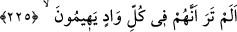
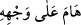
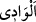
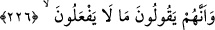

biri kerîm/asil/cömert diye vasfedilebilir. Kerîm/cömert birisi de bahşişi geç kaldığı
zaman alçak diye vasfedilebilir.
İ’câzın nazımda değil nesirde vukû bulmuş olması da nesrin şiirden daha üstün
olduğunu gösteren delillerdendir. Çünkü Hz. Peygamber (s.a.)’in zamanı fesâhat zamanı
idi.
225. Baksana onlar her vâdide şaşkın şaşkın dolaşırlar.
Ey bakıp görebilen kişi “baksana” yâni baktın ve gördün ki “onlar” yâni şâirler,
övme, yerme, kötüleme, yalan söyleme, sövüp sayma, lânet, iftirâ, alçaklık, boş
iddiâlar, büyüklenme, karşılıklı övünme, birbirine hased etme, kendini beğenme,
gösteriş, üstünlük taslama, hasislik, cimrilik, tamah, pintilik, zillet, bayağılık, her türlü
kötü ahlak, neseblere ve ırzlara dil uzatma ve şiirin peşinden gelen bunlardan başka
âfetler gibi “her vâdide şaşkın şaşkın dolaşırlar.”
el-Muhtâr’da belirtildiği gibi “
” aşktan veya başka sebepten başını alıp
gitmek, avare avare dolaşmak demektir. Yâni onlar avare avare dolaşırlar, belli bir yol
bulamazlar. Bilakis dedi-kodu, vehim, hayal, azgınlık ve dalâlet vâdilerinde şaşırıp
kalırlar.
Râğıb der ki: “
”nin asıl anlamı suyun aktığı yer demektir. Buradan iki dağ
arasındaki açıklığa/yarığa da “vadî” denilmiştir. Mezheb ve üslub gibi “yol” için de
mecâzen “vâdi” kelimesi kullanılır. “Falan bir vâdide, sen başka bir vâdidesin.” denir.
“Baksana onlar her vâdide şaşkın şaşkın dolaşırlar.” âyeti, onlar medih, hiciv, cedel
ve aşk şiiri gibi söz üslublarında ve diğer her türlü sözde aşırıya giderler.
el-Vasît’ta der ki: “Vâdi” söz türleri, söz söyleme konusunda şaşkınlık ve
taşkınlıkları, câhilce boş ve bâtıl olarak söyledikleri sözleri, övme ve yerme konusunda
aşırı gitmeleri için bir mesel/temsildir.”
226. Ve onlar yapamayacakları şeyleri söylerler.
“Ve onlar” şiirlerinde övünürken ve boş iddiâlarda bulunurken yiğitlik ve
kahramanlıklardan “yapamayacakları şeyleri söylerler.” Yâni işlenmemiş fıska
kendilerini şâhid gösterirler ve kimseye verilmemiş haberleri, kendilerinin haberi
varmış gibi nazma çekerler. Cömertliğe teşvik ederler, kendileri yapmazlar. Cimrilikten
nefret ettirirler, kendileri cimrilikte ısrar eder. İnsanların yaptığı çok basit bir kusurdan